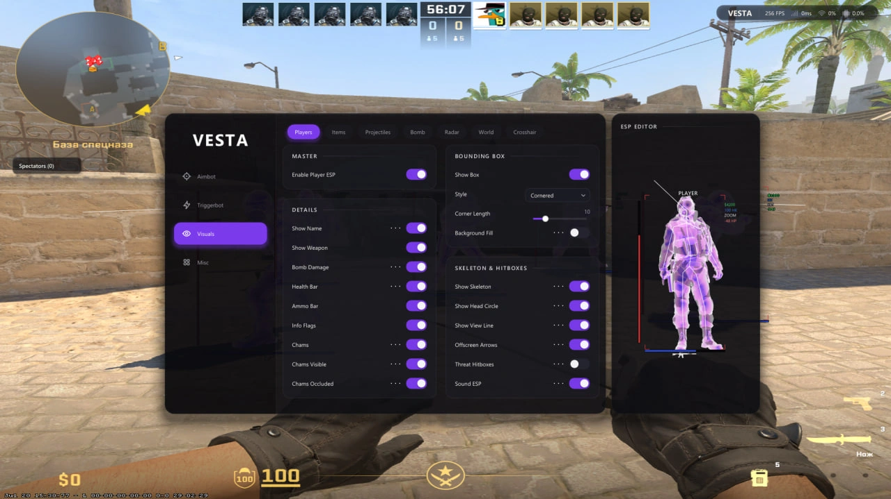

Full legit
Legit Sync ESP and basic utilities only—no information the game has not legitimately exposed.
Download .cfgRead-only architecture, a unified combat pipeline, fully configurable visuals and a local Lua API—built as one coherent product.
Read-only process accessNo driver or injectorNo telemetry

Combat, rendering, movement and automation share the same snapshots, activation state and configuration model.
Every profile is a regular Vesta configuration file. Download it, open Configs in Vesta and load the file—nothing is installed or executed.
Legit Sync ESP and basic utilities only—no information the game has not legitimately exposed.
Download .cfgWall information and a basic trigger configuration for matches where opponents already use WH.
Download .cfgSeed Trigger tuned for jump shots, aggressive timing and the highest practical effectiveness.
Download .cfgScripts receive documented game snapshots, UI controls, drawing primitives and helper APIs. Web Radar is the first complete example—and the preview below uses its real frontend and a captured Vesta snapshot.
Release builds and source live on GitHub. The landing page is static and can be hosted directly with GitHub Pages.